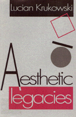

The aesthetic theories of Kant, Schopenhauer, and Hegel are traced through modernism and postmodernism
The aesthetic theories of Kant, Schopenhauer, and Hegel are traced through modernism and postmodernism


 The aesthetic theories of Kant, Schopenhauer, and Hegel are traced through modernism and postmodernism
The aesthetic theories of Kant, Schopenhauer, and Hegel are traced through modernism and postmodernism

|  |
Aesthetic LegaciesLucian Krukowskicloth EAN: 978-0-87722-972-8 (ISBN: 0-87722-972-4) |
Outstanding Academic Title, Choice, 1994
Lucian Krukowski traces the influence of three nineteenth-century theories of art through twentieth-century modernism and into the postmodernist present. Following the theories of Kant, Schopenhauer, and Hegel, Krukowski first discusses how each philosopher locates the aesthetic within the framework of the philosophical system. He then identifies each theory through a dominant theme and traces the transformations of these themes into later thought and practice.
The Kantian legacy originates in the theme of beauty and continues through an examination of aesthetic taste into the modernist concern with artistic form. Schopenhauer�s legacy moves from the dynamics of Will into the themes of creative expression and artistic intentionally. Hegel�s identification of art as a symbol of spirit�s evolution is traced through the themes of artistic progress and cultural criticism.
Krukowski interprets late modernism as a period in which the continuing transformation of aesthetic themes is arrested and congeals into dogma. This precipitates the reaction we now call postmodernism. The author first examines postmodernism through its various rejections of modernist dogma and then evokes the alternative ideologies and practices that characterize present-day art.
Preface
Introduction
Part I: The Aesthetic Systems
1. Kant
2. Schopenhauer
3. Hegel
Part II: Themes and Transformations
4. Kant and Taste
5. Schopenhauer and Expression
6. Hegel and Progress
Part III: Modernism and Postmodernism
7. Form, Intention, Criticism
8. Three Dogmas of Modernism
9. The Postmodern Legacy
Notes
Index
Lucian Krukowski is Professor of Philosophy at Washington University, St. Louis, and a widely exhibited painter whose work is included in the collections of several major museums.
The Arts and Their Philosophies, edited by Joseph Margolis.
The volumes in The Arts and Their Philosophies, edited by Joseph Margolis, include: overviews of such well-defined sub-disciplines as the philosophy of music, film, and literature; studies of important figures, schools, and movements; monographs on such topics as postmodernism, texts and interpretation, reference in fiction, and the methodology of art history; explorations of the intersection of the arts and other disciplines, such as feminism and interpretation, art and politics; and translations of major works.
© 2015 Temple University. All Rights Reserved. This page: http://www.temple.edu/tempress/titles/934_reg.html.